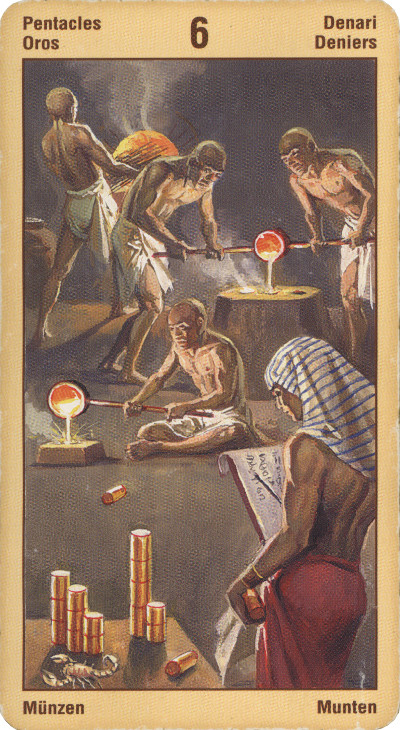

Шестёрка Пентаклей — Успех
Прямое положение: подарки, дары, вознаграждение; процветание.
На практическом уровне эта карта может означать награду, успех, перспективный проект.
Ловушка. Дать больше, чем можешь. Взять больше, чем могут дать.
Благополучный проход ситуации пятерки пентаклей выражает шестерка пентаклей, которая означает процветание, здоровье, финансовое благополучие. Эта карта символизирует благополучие, которое вы выстроили своими руками, добились своим трудом. Через Шестерку пентаклей к вам приходит заслуженное вознаграждение.
Карта может указывать на признание ваших заслуг.
В прямом положении шестерка пентаклей может указывать на тот период благополучия, который наступает после того, как жизнь устраивает вам очередной экзамен, и вы его успешно сдали.
Шестерка. Данная карта в вашем раскладе - знак того, что потрясения и неудачи, вызванные началом преобразований в вашей жизни, уже закончились. Вы успешно прошли самый нелегкий этап на пути к новой ступени развития и теперь можете позволить себе несколько расслабиться и заняться созидательной деятельностью.
Шестерка Пентаклей говорит о том, что вам без труда удастся реализовать большую часть своих намерений и планов. Такое стало возможным благодаря не только покровительству судьбы, но и некоторым чертам вашего характера - дружелюбию, умению находить общий язык с самыми разными людьми, - а также способности так преподнести окружающим ваши идеи, чтобы и они прониклись важностью задуманного вами.
Получение финансовых благ и совет поделиться ими с более бедными и нуждающимися людьми. Время реализации своих планов. Спонсорство.
В перевернутом виде означает, что человек не послушает этих советов, от чего рискует быть обманутым.
Вы можете обнаружить, что из гордости отказались от предложенной финансовой или иной помощи и поддержки, или же вы можете чувствовать, что не получили всего, чего заслуживаете. Не исключено, что долги не погашаются, а наследство не такое большое, как ожидалось. Не исключен риск кражи или убытков из-за азартных игр, биржевых сделок или мотовства. Возможность болезни, необходимость более внимательно следить за своим здоровьем.
В отрицательном значении: Взяточничество, ревность, зависть, самообман, относительно своего финансового благополучия. Капризы. Скупость. Желание получить незаслуженные дары, обмануть кого-то при дележе.